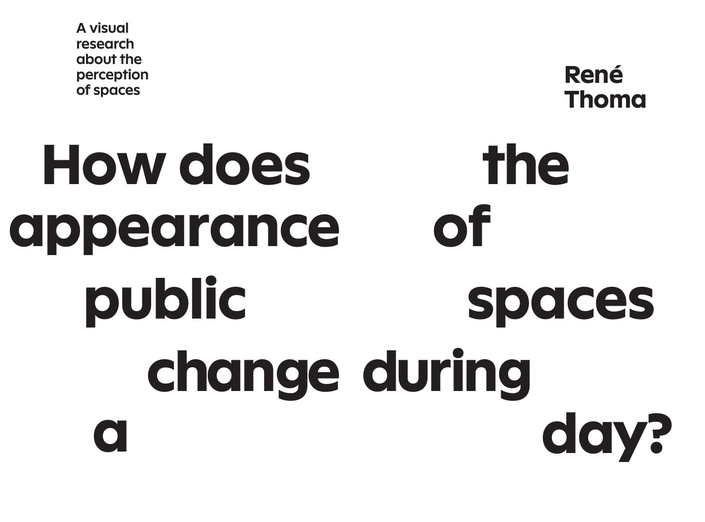
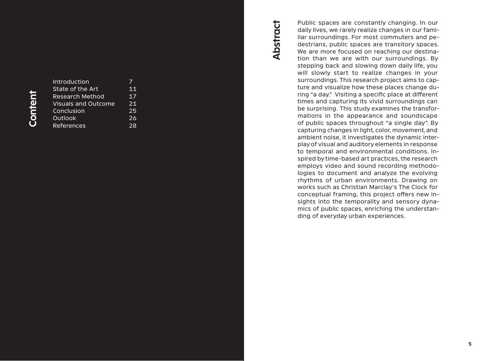
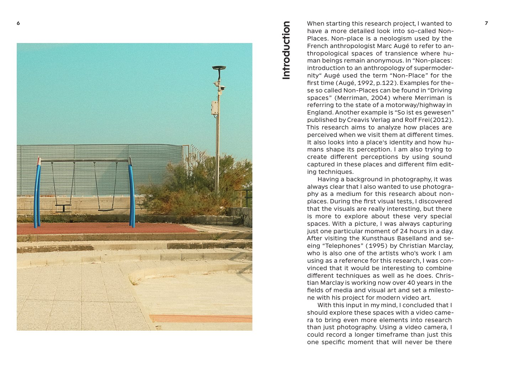
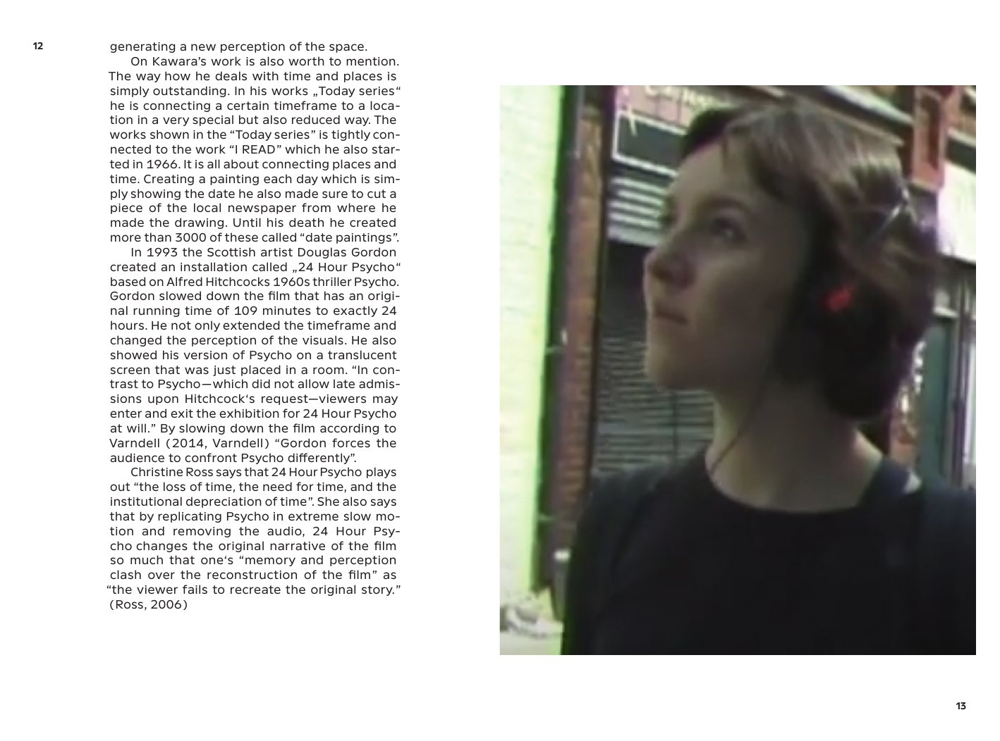
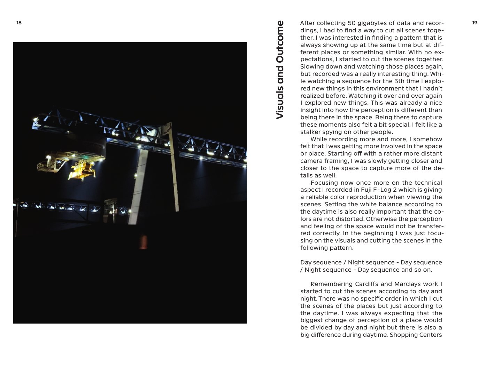
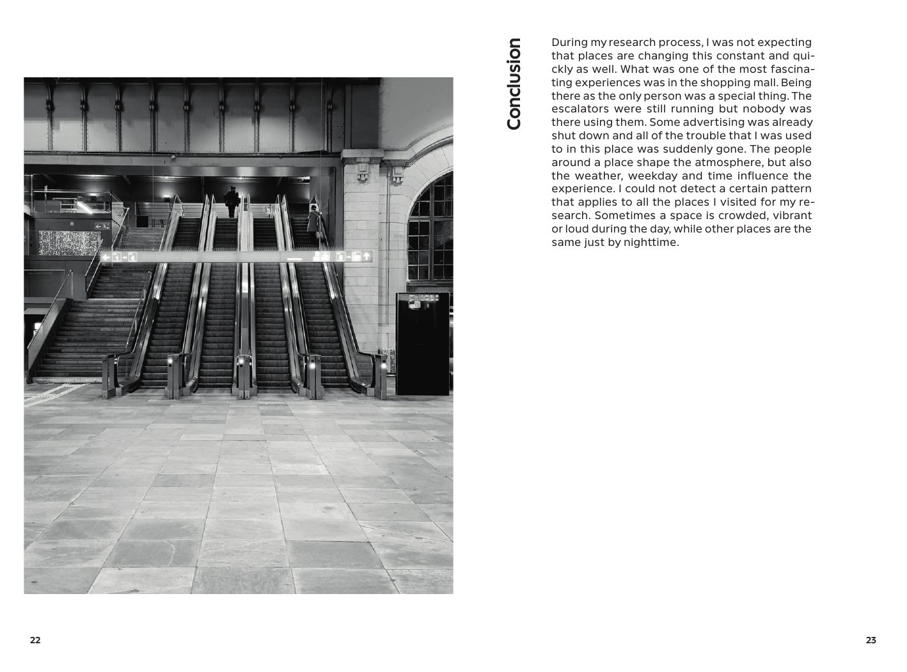
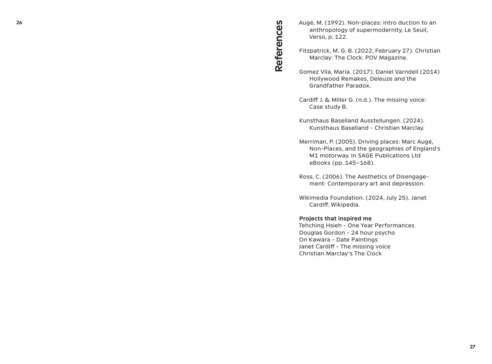

How does the appearance of public spaces change during a day?














How does the appearance of public spaces change during a day?
Buchgestaltung, 2025
Wie verändert sich ein öffentlicher Raum im Lauf eines Tages? Das Buch geht dieser Frage mit Fotos und Text nach. Entstanden ist es im Kurs Tool Typography, Gestaltung, Druck und Bindung habe ich selbst übernommen.